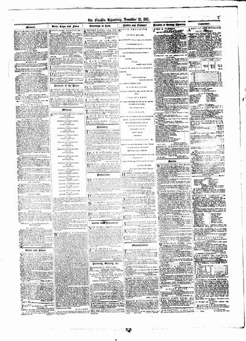

|


|
Franklin Repository and Transcript: Feb. 1, 1860, page 7 |
|
Page 7 usually was composed entirely of advertisements. These could be local or extralocal, advertising products for sale, offering the services of lawyers, or encouraging readers to enroll at educational institutions such as Baltimore Commercial College or the Cumberland Valley Institute. |